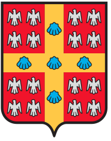

Évènement interfacultaire et interprogramme
Les étudiants de tous les domaines de la santé et de toutes les facultés du Québec (ULaval, McGill, UdeM, USherbrooke et UOttawa) sont les bienvenus.
Samedi 12 Mai 2018
Pavillon Jean-Coutu
Université de Montréal
Ouverture des inscriptions le 12 Avril 2018 à 18h
Restez à l'affût !
Le Symposium des Populations Vulnérables est un événement annuel interfacultaire (UdeM, ULaval, USherbrooke, McGill, UOttawa) réunissant les étudiants et les professionnels de la santé. Cet évènement regroupe plusieurs ateliers et conférences permettant l’exploration des différents enjeux bio-psycho-sociaux des populations vulnérables québécoises.
Cette année, le Symposium abordera la santé des migrants (haitiens, vietnamiens, syriens, etc.) à travers les enjeux de leur parcours migratoire et les différentes approches à envisager pour outiller les professionnels de la santé à favoriser leur intégration dans leur pays d’accueil.
Des invités de renom viendront vous partager leur expérience.
Des activités interactives pour outiller les professionnels de la santé sur les différents enjeux qui touchent les migrants.
Déjeuner et dîner vous seront offerts.
Les étudiants de tous les domaines de la santé et de toutes les facultés du Québec (ULaval, McGill, UdeM, USherbrooke et UOttawa) sont les bienvenus.
Auteure du succès littéraire et best-seller Ru, son premier livre paru en 2009 et dont les droits furent vendus dans une vingtaine d’autres pays, Kim Thúy a d’abord été couturière, interprète, avocate, propriétaire du restaurant Ru de Nam et chroniqueuse culinaire pour la radio et la télévision. Autant de professions, de hasards, et toute une suite d’échecs puis de succès qui l’ont un jour amenée à écrire et à devenir la grande auteure que nous connaissons aujourd’hui.
Objectifs d'apprentissage
À la fin de cette conférence, les participants seront en mesure de comprendre:
Rachel Kiddell-Monroe est activiste et avocate spécialisée en matière de santé globale, de gouvernance et de bioéthique. Ayant rejoint MSF en 1992, Rachel a passé cinq ans sur le terrain en tant que chef de mission à Djibouti, au Rwanda et en République Démocratique du Congo. Elle a également passé quatre ans en Amérique latine à la tête d’une initiative régionale en affaires humanitaires. Rachel est actuellement Présidente du Conseil d’administration du groupe international de plaidoyer Universities Allied for Essential Medicines, et a été consultante à l’international pour diverses organisations de santé. Rachel a été réélue au sein du Conseil d'administration international en 2016.
Sa conférence sera tenue en anglais.
Objectifs d'apprentissage
À la fin de cette conférence, les participants seront en mesure de comprendre :
Vous aurez l’option de choisir 3 ateliers parmi les suivants:
À la fin de cette activité, les participants seront en mesure de :
Dre Morin et autres intervenants de la Clinique Caméléon
En savoir plus
À la fin de cette activité, les participants seront en mesure de :
Amélie Bleau, orthophoniste à l'IRGLM
Sabah Meziane, candidate au PhD en orthophonie et co-fondatrice du programme StimuLER
En savoir plus
À la fin de cette activité, les participants seront en mesure de :
Janet Cleveland PhD, chercheure sur les droits et la santé des demandeurs d'asile, réfugiés et migrants sans-statut
En savoir plus
À la fin de cette activité, les participants seront en mesure de :
Dre Marie-Jo Ouimet, Médecin de famille
Madame Marianne Leaune-Welt, travailleuse sociale
En savoir plus
À la fin de cette activité, les participants seront en mesure de :
Dre Catherine Laurin-Bérard: médecin de famille à La Maison Bleue de Saint-Michel
Mme Anne-Marie Bellemare, travailleuse sociale à La Maison Bleue de Parc-Extension
En savoir plus
À la fin de cette activité, les participants seront en mesure de:
10h30 - 11h00
Accueil / Café
11h00 - 12h00
Conférence : Kim Thuy, écrivaine
12h00 - 13h00
Conférence : Rachel Kiddell-Monroe, Membre du conseil d'administration de MSF-International
13h00 - 14h00
Dîner
14h00 - 14h40
Atelier 1
14h50 - 15h30
Atelier 2
15h40 - 16h20
Atelier 3
16h20 - 16h30
Mot de la fin
Nous remercions les organisations suivantes pour leur soutien:


Pour toute question ou commentaire, n'hésitez pas à nous contacter!
Rien de plus simple! Vous pouvez acheter vos billets de deux manières:
Les inscriptions seront ouvertes le 12 avril 2018 à 18h